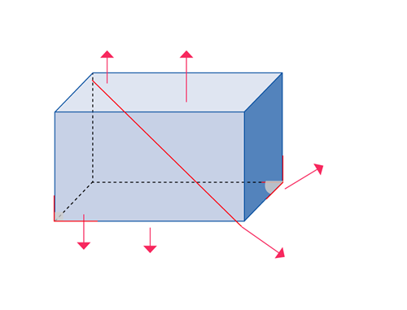

1.
Resuelve el siguiente ejercicio.
¿Cuál de las siguientes fracciones están más próximas a 1?
79
;
911
;
97
;
119
.
Opciones de repuesta
2.
Escribe V si la proposición es verdadera y F si la
proposición es falsa.
3.
Escribe los elementos y el nombre de los siguientes cuerpos geométricos.

Nombre:
4.
Dibuja dos figuras semejantes e indica la razón de semejanza.
5.
Representa en la recta numérica real el número
√
, con un módulo unitario de 1,5 cm.
6.
Obtén el valor numérico de las siguientes expresiones.
7.
Reduce los términos semejantes.
8.
Completa las frases.
9.
Expande los siguientes ejercicios empleando productos notables o factoriza si es el caso.
10.
Dados los siguientes conjuntos:
A = {x | x ∈ ℕ, 3 < x < 9}
B = {2x - 1 | x ∈ ℕ, x ≤ 7}
a.
Determina cada conjunto por extensión.
b.
Encuentra A U B y representa en un diagrama de Venn.
Representación:
| A Diferencias |
Semejanzas | B Diferencias |
11.
Para determinar el tipo de programa que prefieren los ecuatorianos en el horario de 18h00 a 20h00,
se realiza un experimento y se toma al azar una muestra de 3000 personas de diferentes edades para
aplicar una encuesta.
Responde las siguientes preguntas.
Responde las siguientes preguntas.
12.
Aplica el método de Ruffini y expresa como factores los siguientes polinomios.
x2 - 3x - 2 =
x2 - 3x - 2 =
13.
Escribe con tus palabras qué entiendes por:
14.
Identifica la ecuación equivalente a 7x = 4x + 6.
15.
Escriban el tipo de suceso que se solicita de la experiencia aleatoria de hacer girar la ruleta.